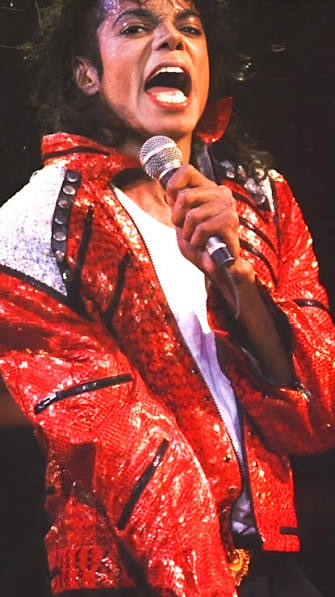

About Michael Jackson

Michael Jackson was one of the most famous musicians in the world. He was born on August 29, 1958, in Gary, Indiana. He became famous as a member of the Jackson 5 before starting a successful solo career. His music and performances influenced many artists around the world.
Michael Jackson was known for his unique dance moves, powerful voice, and creative music videos. His album Thriller became one of the best-selling albums of all time. Songs such as "Billie Jean" and "Beat It" are still popular today. Although he passed away in 2009, his music continues to inspire people of different generations.
"Billie Jean" reached number one on the Billboard Hot 100, topped the Billboard Hot Black Singles chart within three weeks, and became Jackson's fastest-rising number one single since his time as a member of the Jackson 5. "Billie Jean" was one of the best-selling singles of 1983, helping Thriller become the best-selling album of all time, and became Jackson's best-selling solo single.
Click the links above to learn more about iconic MICHAEL